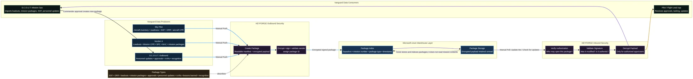
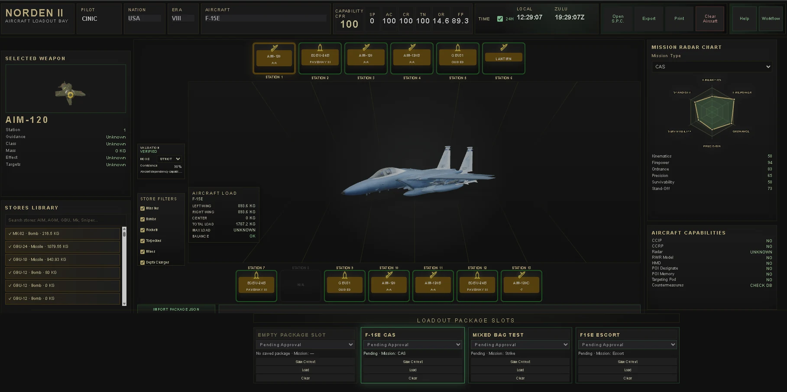

SkyPilot
Aircraft inventory, aircraft readiness, pilot certifications, registry status, and combat-power inputs begin here before they feed mission planning.
Track Aircraft ReadinessSuite Overview
SkyPilot shows what is ready. Norden II shows how to fight. S.C.O.U.T. / SONAR turns it into command rhythm.
Vanguard C4 is the connective layer between aircraft readiness, loadout planning, mission workflow, live status, after-action learning, and recognition. The suite is designed so each module owns a clear operational lane while approved data moves through a shared command picture.

Data Ownership
Vanguard C4 is strongest when the modules do not compete for authority. SkyPilot owns aircraft readiness and registry data. Norden II owns loadout construction and validation. S.C.O.U.T. / SONAR owns command decisions, mission records, personnel workflow, AARs, recognition, and operational visibility.
Aircraft inventory, aircraft readiness, pilot certifications, registry status, and combat-power inputs begin here before they feed mission planning.
Track Aircraft ReadinessLoadout intelligence, weapon station detail, mission effectiveness, validation state, compact ordnance summaries, and strike-package planning belong here.
Plan the StrikePersonnel, missions, availability, commander intent, execution status, AARs, recognition, and Decagon C2 operating rhythm come together here.
Command the SquadronApproved Data Movement
The suite does not need to push everything everywhere. Live status should move immediately, routine updates should move through deliberate daily operations sync, and mission activity should travel with the mission record.

Architecture rule: mission data travels with the mission; live status travels immediately; daily reports carry routine operator updates.
SONAR presence, ready state, mission-active status, standby, training, or command attention indicators should be visible quickly.
Aircraft registry deltas, certifications, awards, skills, and routine personnel updates move as approved report packages.
Mission creation, force allocation, loadout review, execution, AAR, and recognition stay attached to the operational record.
The Suite in Motion
Vanguard C4 gives command a practical chain of answers. It begins with available people and aircraft, moves through loadout and mission planning, then returns lessons and recognition back into squadron history.

